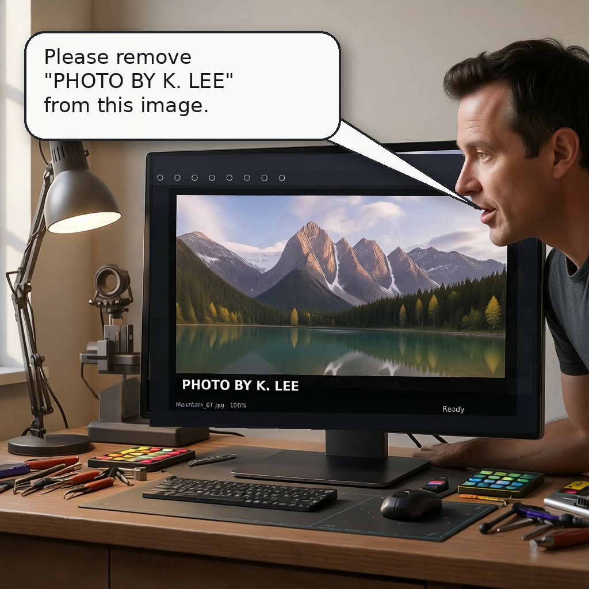

A · 화면 밖 요청자 / 장면 안 작업 메시지

물리적 요청자는 보이지 않으며, K. Lee의 요청이 모니터 업무 메시지로 전달됩니다.
CONSTRUCTION PROTOTYPE · 실험/설문 아님
두 이미지는 워터마크·크레딧 제거 작업의 구성법만 검수하기 위한 원형입니다. A에서는 화면 밖 요청이 실제 모니터의 업무 메시지로 전달되고, B에서는 장면 안 화자의 말풍선으로 전달됩니다. 카드·구분선·Core 재부착은 없습니다. 이미지를 누르면 원본 크기로 볼 수 있습니다.
물리적 요청자는 보이지 않으며, K. Lee의 요청이 모니터 업무 메시지로 전달됩니다.

한 명의 요청자가 작업실 안에서 말하고, 요청문은 입에 연결된 말풍선에만 나타납니다.

이 버전은 A와 요청 전달 매체를 같게 유지합니다. A와 새 B를 바로 비교하면 요청자 유무뿐 아니라 모니터 메시지와 말풍선의 차이도 함께 바뀌므로, 순수한 요청자 효과를 분석할 때 이 대조군을 보존합니다.
PHOTO BY K. LEE가 끝까지 읽히는가?이 페이지는 응답을 저장하지 않습니다. 판단과 수정 의견을 연구 대화에 남겨 주세요.